교육할 내용
- 교안디바이스 목적에 맞는 외형 설계
- 교안메이커 재료로 하우징 제작·조립 (마이크로비트·배터리·모터·센서 수납)
- 교안점검표와 역할 분담, 결과물 발표
주의점
- 주영욱 대표3D 프린터는 쓰지 않는다. 있어도 출력에 하루가 걸리고 강사는 지켜보는 것 말고 할 일이 없다
- 주영욱 대표너무 만들기 어려운 것은 피한다
- 주영욱 대표한 사람이 다 만들면 그 학생만 일한다. 부분을 나눠 만들어 조립한다
중요한 점
- 주영욱 대표폼보드·골판지·글루건·아크릴·커터칼·본드 등 재료가 다 온다. 남은 재료는 버리거나 가져가도 된다
- 주영욱 대표권장 디바이스: 핸드폰, 태블릿, 음악 재생기처럼 화면에 표시되거나 소리로 출력되는 기기. 사진을 보여 주며 안내
- 주영욱 대표CEO가 분담: 너는 외형, 너는 기계 부분, 너는 프로그램
- 주영욱 대표이틀째다. 3일차는 발표만 1~2시간이니 여기서부터 최종 결과물을 준비한다
주영욱 대표 코멘트
주영욱 대표3D 프린터는 할 시간이 없어요. 학교에 없을 경우 폼보드, 골판지, 글루건, 아크릴, 커터칼, 본드 이런 걸 다 줘요. 통화 45:13
주영욱 대표너무 만들기 힘든 거 만들지 말고, 핸드폰이나 태블릿, 음악 재생하는 기계 같은 걸 한번 만들어 봐라 하면 돼요. 통화 46:25
주영욱 대표누가 어떤 걸 담당할 건지, 디바이스도 각자 만들어서 조립하는 형식으로 가야 돼요. 한 사람이 만들면 걔만 일하잖아요. 통화 47:36
주영욱 대표여기서부터는 최종 결과물을 만들 준비를 해야 될 것 같아요. 발표하다 보면 시간이 되게 빨리 가거든요. 통화 48:10
교안 장표 17장 · 코멘트 5곳

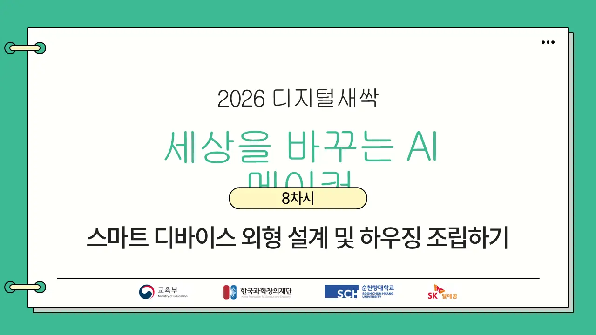

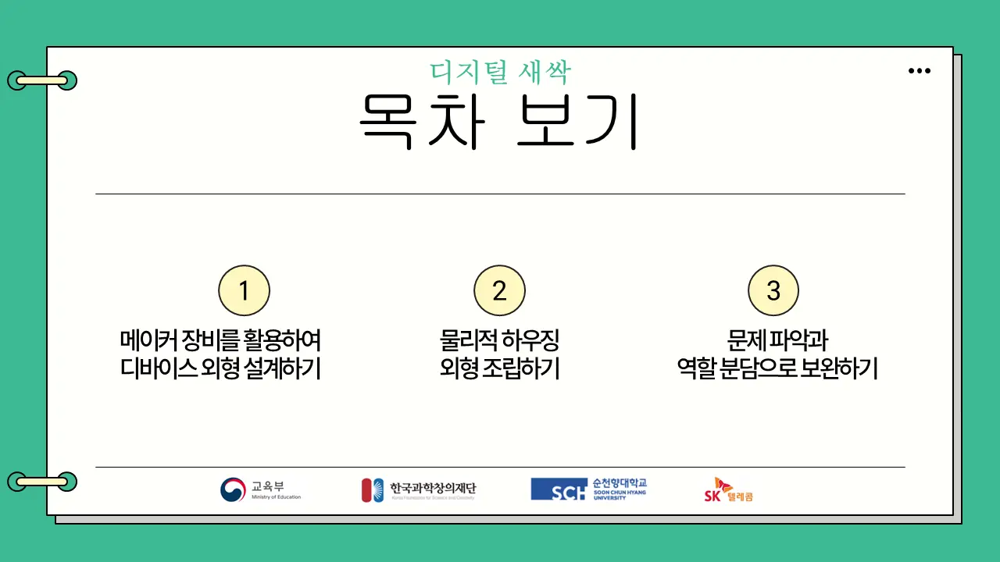

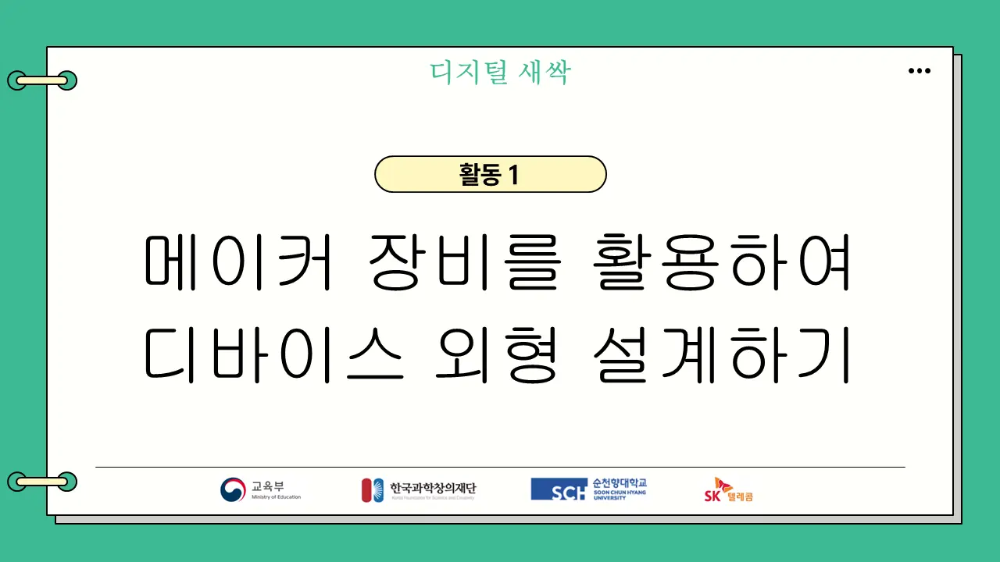

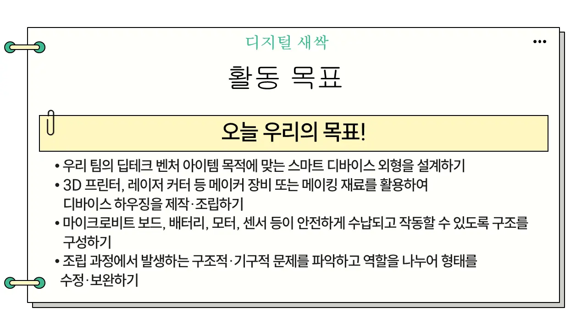

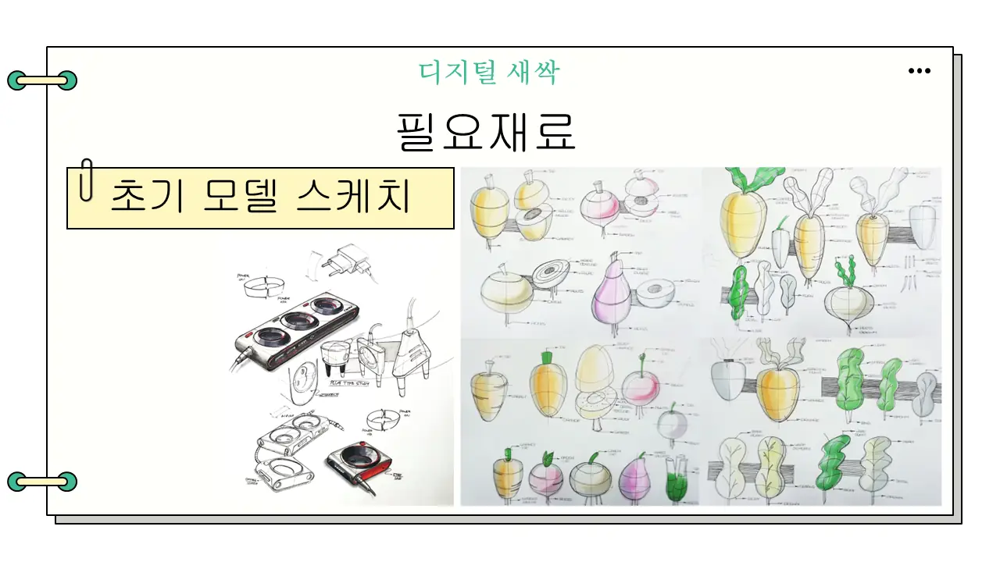

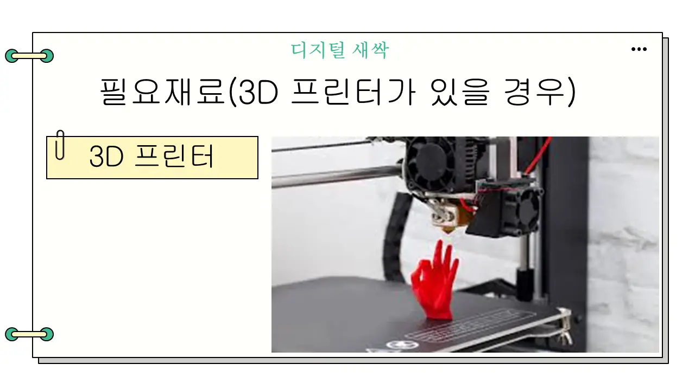
주영욱 대표3D 프린터 경로는 건너뛴다.

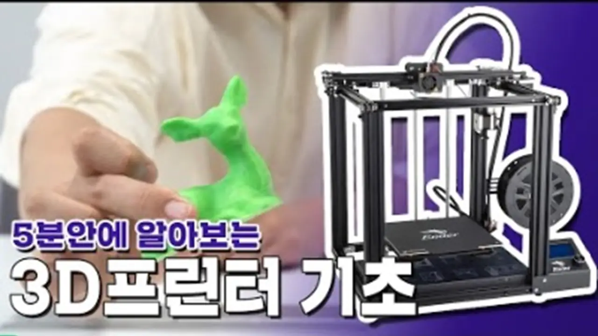

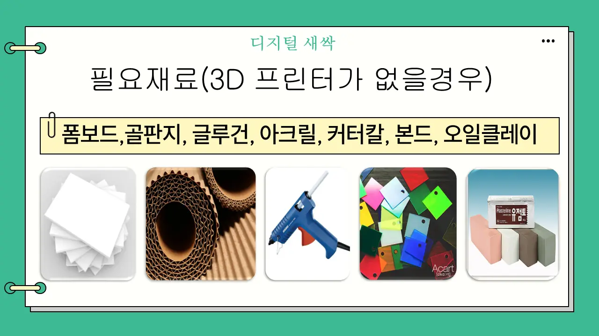
주영욱 대표이 재료 세트로 만든다. 남은 재료는 버리거나 가져가도 된다.

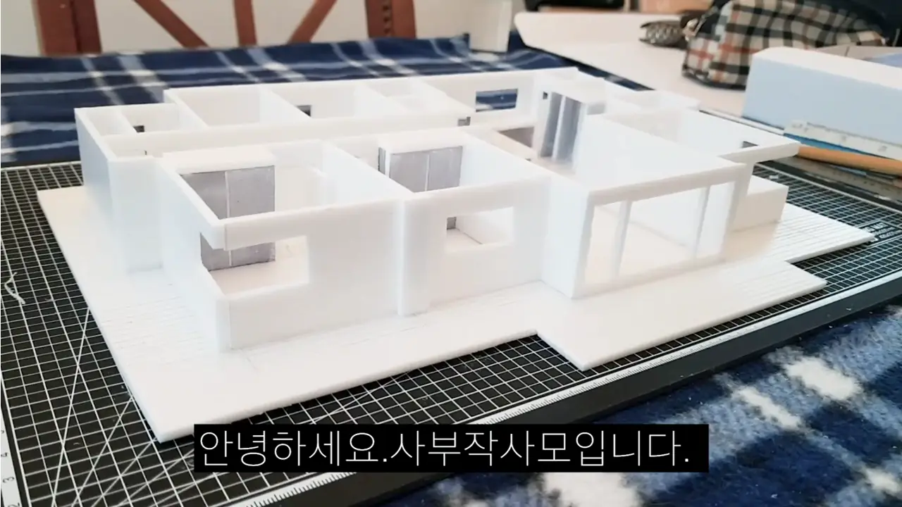
주영욱 대표참고 영상: 교안 노트에 링크된 제작 영상.

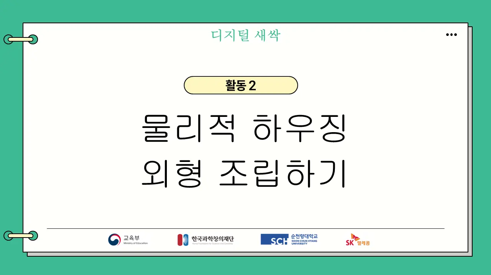

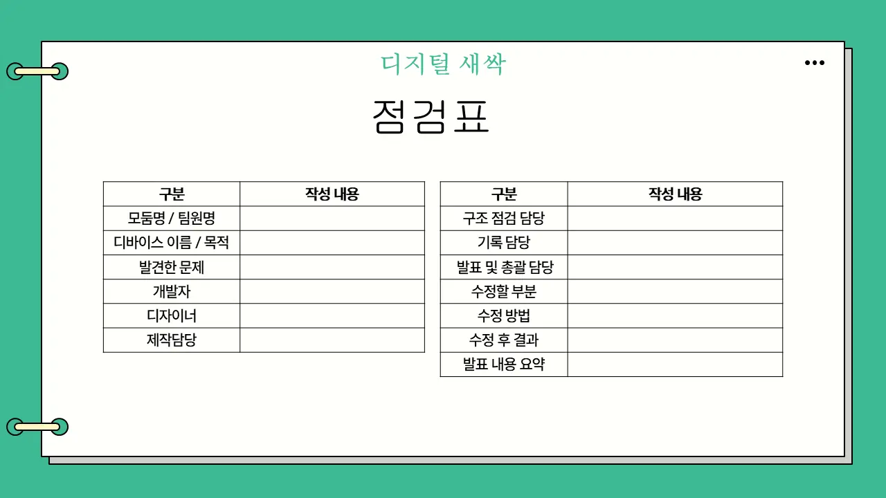
주영욱 대표점검표로 ‘누가 어떤 부분’을 정한다.

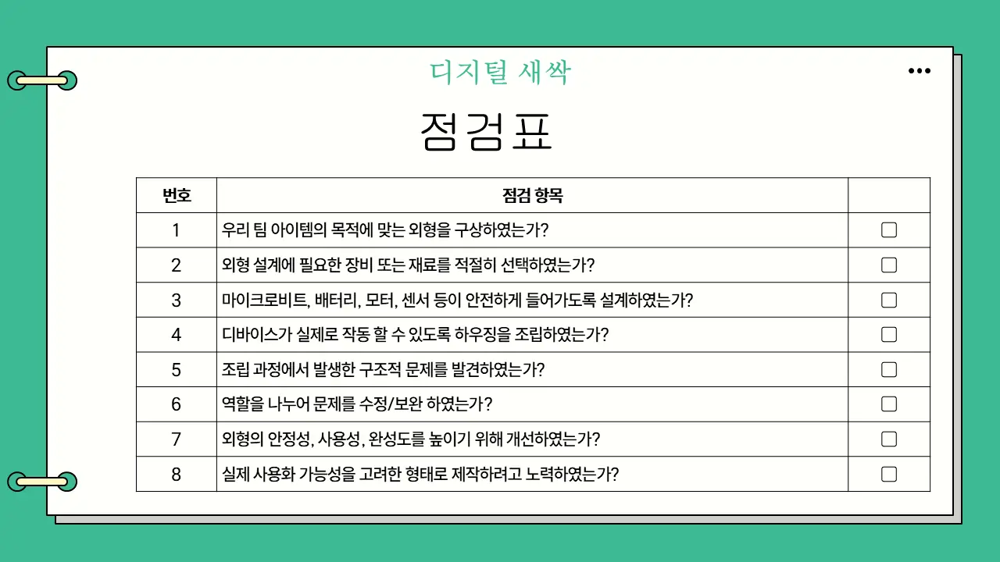

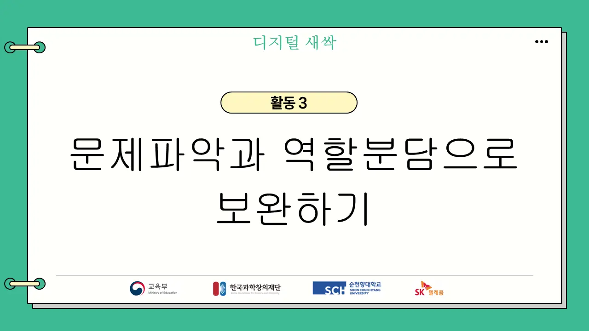

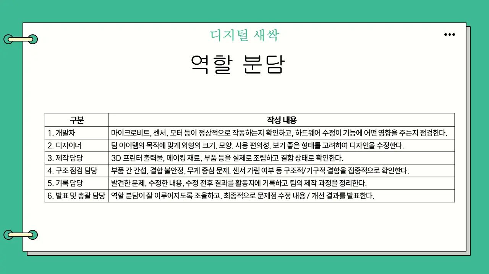
주영욱 대표CEO가 외형·기계·프로그램 담당을 나눈다.

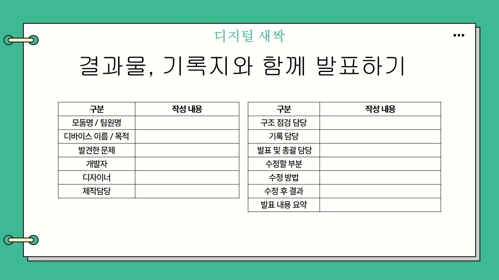

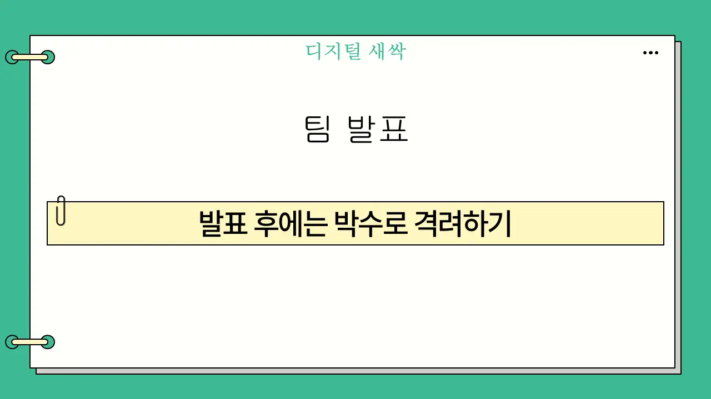